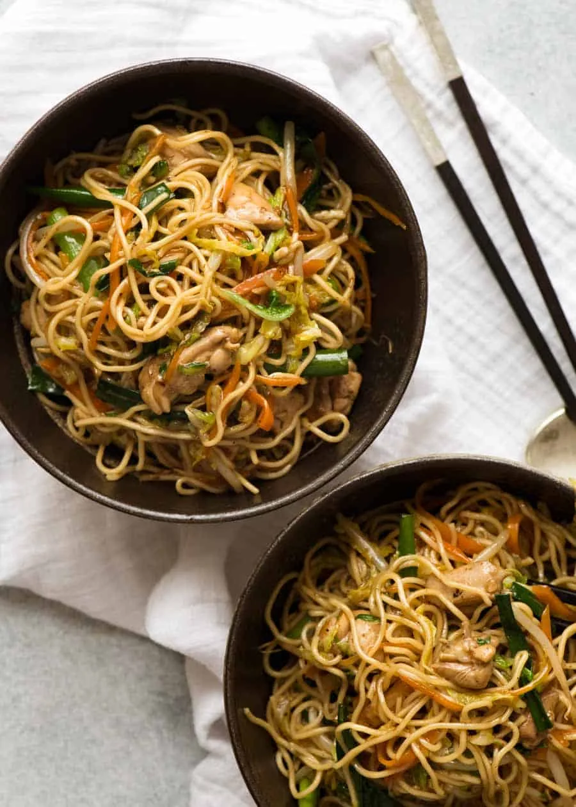

Chowmein Noodle

Description
Chowmein Noodle is a popular Chinese dish made with stir-fried noodles, vegetables, and often some type of protein such as chicken, pork, shrimp, or tofu. The dish is flavored with a savory sauce, typically made from soy sauce, oyster sauce, and a variety of seasonings. It's a versatile and satisfying meal that can be enjoyed as a main course or a side dish.
This recipe is easy to follow and can be customized with your favorite vegetables and proteins. It's a great way to enjoy a delicious, homemade version of this takeout favorite.
Ingredients
- 8 oz chow mein noodles
- 2 tbsp vegetable oil
- 1 onion, sliced
- 1 bell pepper, sliced
- 2 carrots, julienned
- 1 cup broccoli florets
- 2 cloves garlic, minced
- 1 inch ginger, minced
- 2 tbsp soy sauce
- 1 tbsp oyster sauce
- 1 tbsp hoisin sauce
- 1/2 cup chicken or vegetable broth
- 1 tbsp cornstarch (optional, for thickening)
- 1/2 lb protein (chicken, pork, shrimp, or tofu)
- Salt and pepper to taste
- Green onions and sesame seeds for garnish
Steps
- Cook the chow mein noodles according to package instructions. Drain and set aside.
- In a large pan or wok, heat the vegetable oil over medium-high heat.
- Add the sliced onion and bell pepper to the pan. Stir-fry for 2-3 minutes until they start to soften.
- Add the julienned carrots and broccoli florets to the pan. Stir-fry for another 3-4 minutes until the vegetables are tender-crisp.
- Add the minced garlic and ginger to the pan. Stir-fry for about 1 minute until fragrant.
- If using protein, add it to the pan and cook until it is fully cooked through.
- In a small bowl, mix together the soy sauce, oyster sauce, hoisin sauce, and chicken or vegetable broth. If you prefer a thicker sauce, mix in the cornstarch.
- Add the cooked noodles to the pan. Pour the sauce over the noodles and vegetables, and toss everything together until evenly coated and heated through.
- Season with salt and pepper to taste.
- Garnish with green onions and sesame seeds before serving.